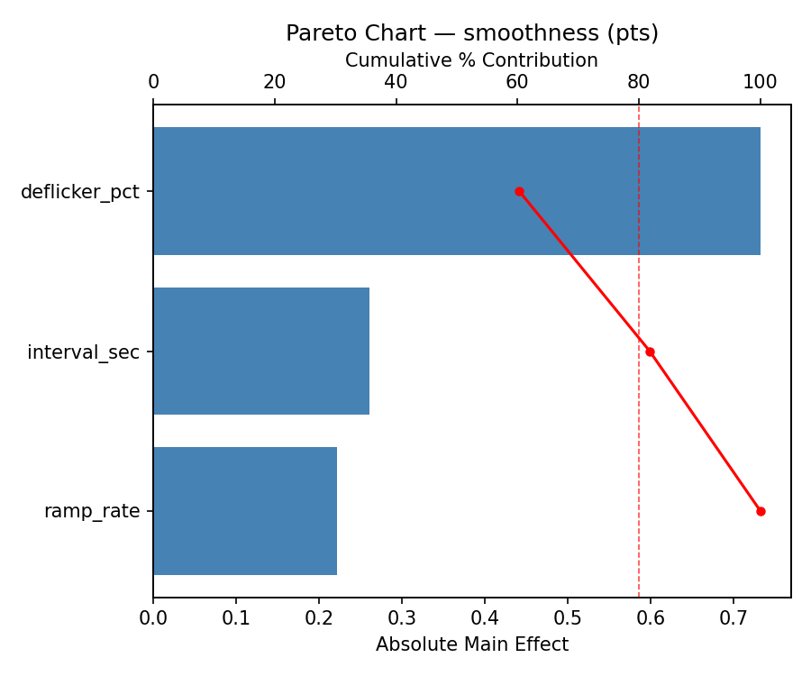
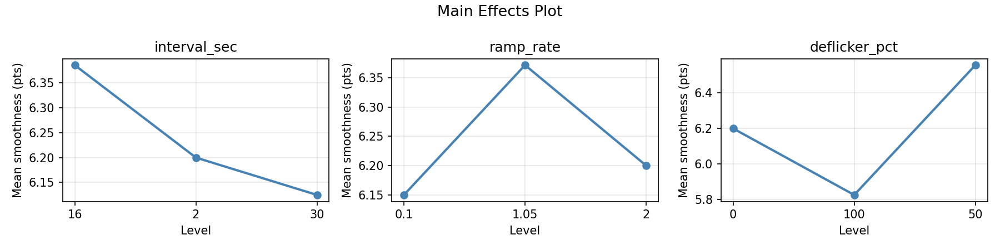
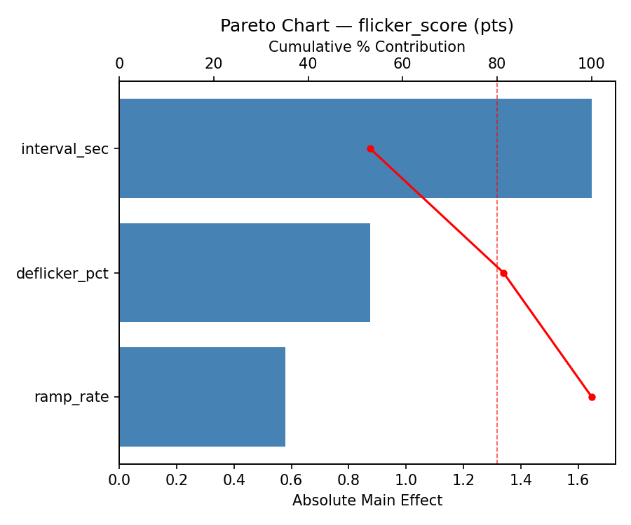
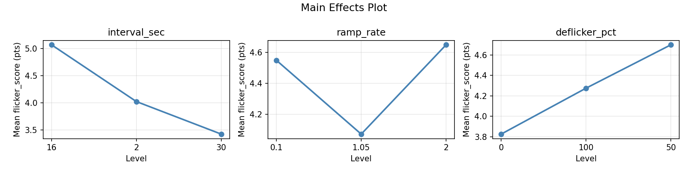
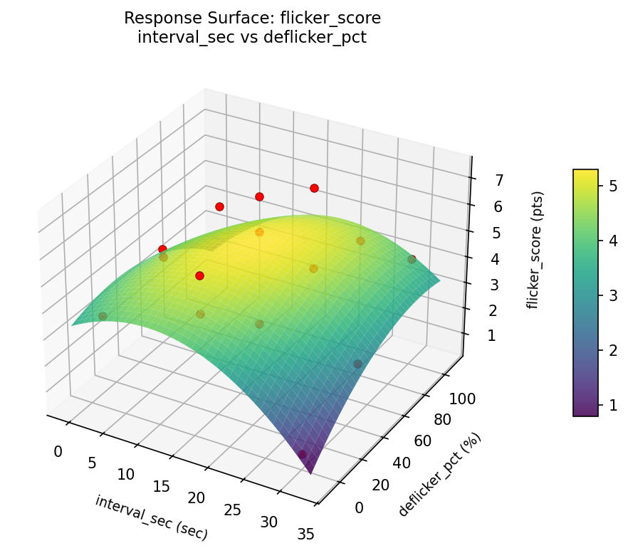
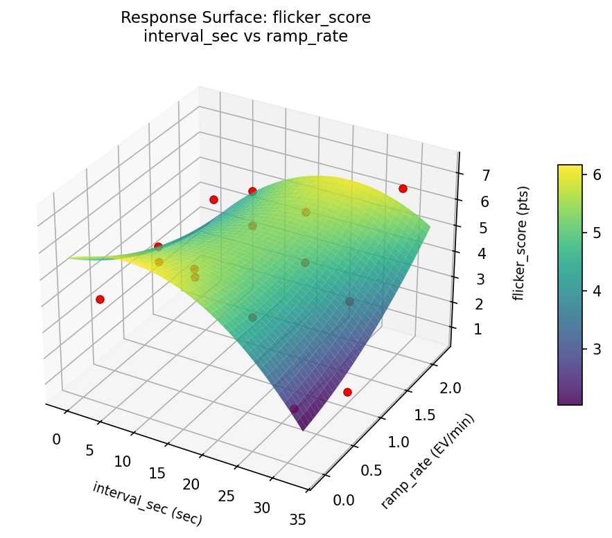
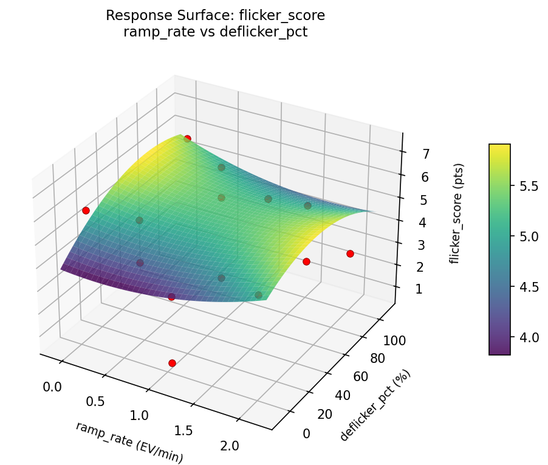
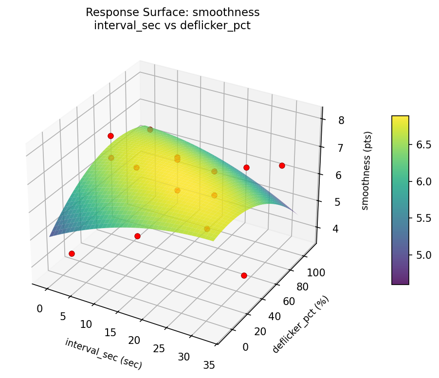
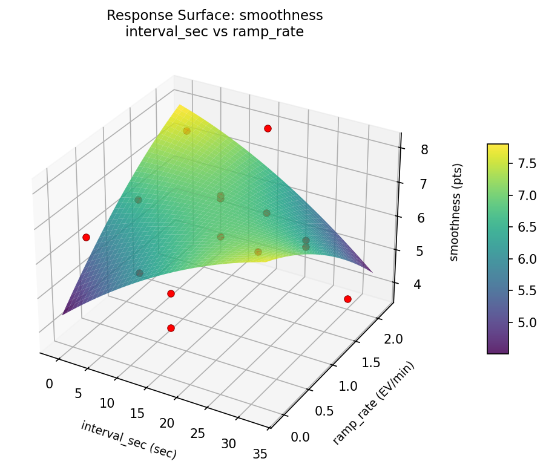
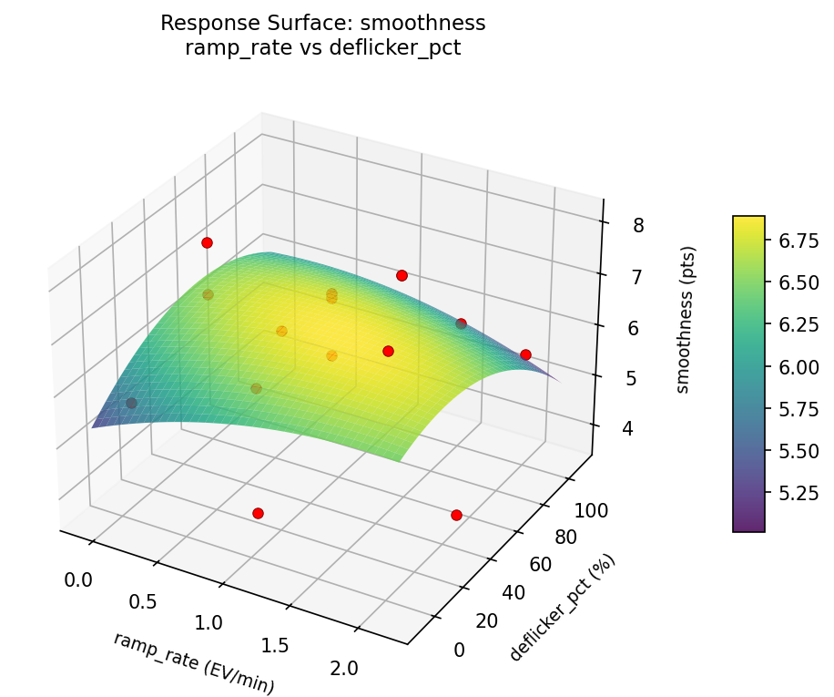

Summary
This experiment investigates timelapse interval settings. Box-Behnken design to maximize smoothness and minimize flicker by tuning capture interval, exposure ramp rate, and deflicker strength.
The design varies 3 factors: interval sec (sec), ranging from 2 to 30, ramp rate (EV/min), ranging from 0.1 to 2.0, and deflicker pct (%), ranging from 0 to 100. The goal is to optimize 2 responses: smoothness (pts) (maximize) and flicker score (pts) (minimize). Fixed conditions held constant across all runs include resolution = 4K, codec = h265.
A Box-Behnken design was chosen because it efficiently fits quadratic models with 3 continuous factors while avoiding extreme corner combinations — requiring only 15 runs instead of the 8 needed for a full factorial at two levels.
Quadratic response surface models were fitted to capture potential curvature and factor interactions. The RSM contour plots below visualize how pairs of factors jointly affect each response.
Key Findings
For smoothness, the most influential factors were deflicker pct (60.3%), interval sec (21.5%), ramp rate (18.2%). The best observed value was 8.1 (at interval sec = 16, ramp rate = 1.05, deflicker pct = 50).
For flicker score, the most influential factors were interval sec (53.1%), deflicker pct (28.2%), ramp rate (18.7%). The best observed value was 0.7 (at interval sec = 16, ramp rate = 1.05, deflicker pct = 50).
Recommended Next Steps
- Run confirmation experiments at the predicted optimal settings to validate the model.
- Consider whether any fixed factors should be varied in a future study.
Experimental Setup
Factors
| Factor | Low | High | Unit |
|---|
interval_sec | 2 | 30 | sec |
ramp_rate | 0.1 | 2.0 | EV/min |
deflicker_pct | 0 | 100 | % |
Fixed: resolution = 4K, codec = h265
Responses
| Response | Direction | Unit |
|---|
smoothness | ↑ maximize | pts |
flicker_score | ↓ minimize | pts |
Configuration
{
"metadata": {
"name": "Timelapse Interval Settings",
"description": "Box-Behnken design to maximize smoothness and minimize flicker by tuning capture interval, exposure ramp rate, and deflicker strength"
},
"factors": [
{
"name": "interval_sec",
"levels": [
"2",
"30"
],
"type": "continuous",
"unit": "sec"
},
{
"name": "ramp_rate",
"levels": [
"0.1",
"2.0"
],
"type": "continuous",
"unit": "EV/min"
},
{
"name": "deflicker_pct",
"levels": [
"0",
"100"
],
"type": "continuous",
"unit": "%"
}
],
"fixed_factors": {
"resolution": "4K",
"codec": "h265"
},
"responses": [
{
"name": "smoothness",
"optimize": "maximize",
"unit": "pts"
},
{
"name": "flicker_score",
"optimize": "minimize",
"unit": "pts"
}
],
"settings": {
"operation": "box_behnken",
"test_script": "use_cases/150_timelapse_settings/sim.sh"
}
}
Experimental Matrix
The Box-Behnken Design produces 15 runs. Each row is one experiment with specific factor settings.
| Run | interval_sec | ramp_rate | deflicker_pct |
|---|
| 1 | 16 | 0.1 | 0 |
| 2 | 16 | 1.05 | 50 |
| 3 | 30 | 1.05 | 100 |
| 4 | 30 | 1.05 | 0 |
| 5 | 16 | 1.05 | 50 |
| 6 | 16 | 1.05 | 50 |
| 7 | 2 | 1.05 | 100 |
| 8 | 30 | 0.1 | 50 |
| 9 | 16 | 0.1 | 100 |
| 10 | 30 | 2 | 50 |
| 11 | 2 | 1.05 | 0 |
| 12 | 16 | 2 | 100 |
| 13 | 2 | 0.1 | 50 |
| 14 | 2 | 2 | 50 |
| 15 | 16 | 2 | 0 |
Step-by-Step Workflow
1
Preview the design
$ python doe.py info --config use_cases/150_timelapse_settings/config.json
2
Generate the runner script
$ python doe.py generate --config use_cases/150_timelapse_settings/config.json \
--output use_cases/150_timelapse_settings/results/run.sh --seed 42
3
Execute the experiments
$ bash use_cases/150_timelapse_settings/results/run.sh
4
Analyze results
$ python doe.py analyze --config use_cases/150_timelapse_settings/config.json
5
Get optimization recommendations
$ python doe.py optimize --config use_cases/150_timelapse_settings/config.json
6
Generate the HTML report
$ python doe.py report --config use_cases/150_timelapse_settings/config.json \
--output use_cases/150_timelapse_settings/results/report.html
Real-World Experiment Workflow
ℹ
Physical Photography Test? Use the Manual Workflow
Photography experiments involve real light, optics, and exposure conditions. Results depend on physical phenomena that must be captured and evaluated. The simulation script above is for demonstration. For your real experiments, use record, status, and export-worksheet.
$ python doe.py export-worksheet --config use_cases/150_timelapse_settings/config.json \
--format csv --output worksheet.csv
$ python doe.py status --config use_cases/150_timelapse_settings/config.json
$ python doe.py record --config use_cases/150_timelapse_settings/config.json --run 1
$ python doe.py analyze --config use_cases/150_timelapse_settings/config.json --partial
$ python doe.py analyze --config use_cases/150_timelapse_settings/config.json
$ python doe.py optimize --config use_cases/150_timelapse_settings/config.json
$ python doe.py report --config use_cases/150_timelapse_settings/config.json \
--output report.html
✔
Works Without a Test Script
The analysis pipeline doesn't care how results were produced. Record your measurements with record, and the full analysis, optimization, and reporting pipeline works identically. Use --partial to get early insights before all runs are complete.
Features Exercised
| Feature | Value |
|---|
| Design type | box_behnken |
| Factor types | continuous (all 3) |
| Arg style | double-dash |
| Responses | 2 (smoothness ↑, flicker_score ↓) |
| Total runs | 15 |
Analysis Results
Generated from actual experiment runs using the DOE Helper Tool.
Response: smoothness
Top factors: deflicker_pct (60.3%), interval_sec (21.5%), ramp_rate (18.2%).
Pareto Chart

Main Effects Plot

Response: flicker_score
Top factors: interval_sec (53.1%), deflicker_pct (28.2%), ramp_rate (18.7%).
Pareto Chart

Main Effects Plot

Response Surface Plots
3D surfaces fitted with quadratic RSM. Red dots are observed data points.
flicker score interval sec vs deflicker pct

flicker score interval sec vs ramp rate

flicker score ramp rate vs deflicker pct

smoothness interval sec vs deflicker pct

smoothness interval sec vs ramp rate

smoothness ramp rate vs deflicker pct

Full Analysis Output
RSM surface: rsm_smoothness_interval_sec_vs_ramp_rate.png
RSM surface: rsm_smoothness_interval_sec_vs_deflicker_pct.png
RSM surface: rsm_smoothness_ramp_rate_vs_deflicker_pct.png
RSM surface: rsm_flicker_score_interval_sec_vs_ramp_rate.png
RSM surface: rsm_flicker_score_interval_sec_vs_deflicker_pct.png
RSM surface: rsm_flicker_score_ramp_rate_vs_deflicker_pct.png
=== Main Effects: smoothness ===
Factor Effect Std Error % Contribution
--------------------------------------------------------------
deflicker_pct 0.7321 0.3271 60.3%
interval_sec 0.2607 0.3271 21.5%
ramp_rate 0.2214 0.3271 18.2%
=== Summary Statistics: smoothness ===
interval_sec:
Level N Mean Std Min Max
------------------------------------------------------------
16 7 6.3857 1.1866 4.7000 8.1000
2 4 6.2000 1.3292 4.3000 7.4000
30 4 6.1250 1.6860 3.7000 7.6000
ramp_rate:
Level N Mean Std Min Max
------------------------------------------------------------
0.1 4 6.1500 1.2396 4.7000 7.6000
1.05 7 6.3714 1.0045 4.3000 7.3000
2 4 6.2000 1.9715 3.7000 8.1000
deflicker_pct:
Level N Mean Std Min Max
------------------------------------------------------------
0 4 6.2000 1.6042 4.3000 8.1000
100 4 5.8250 0.8617 4.7000 6.5000
50 7 6.5571 1.3624 3.7000 7.6000
=== Main Effects: flicker_score ===
Factor Effect Std Error % Contribution
--------------------------------------------------------------
interval_sec 1.6464 0.4777 53.1%
deflicker_pct 0.8750 0.4777 28.2%
ramp_rate 0.5786 0.4777 18.7%
=== Summary Statistics: flicker_score ===
interval_sec:
Level N Mean Std Min Max
------------------------------------------------------------
16 7 5.0714 1.8090 2.5000 7.3000
2 4 4.0250 0.3096 3.6000 4.3000
30 4 3.4250 2.6145 0.7000 6.7000
ramp_rate:
Level N Mean Std Min Max
------------------------------------------------------------
0.1 4 4.5500 1.9018 2.1000 6.2000
1.05 7 4.0714 2.1693 0.7000 7.3000
2 4 4.6500 1.6093 2.8000 6.7000
deflicker_pct:
Level N Mean Std Min Max
------------------------------------------------------------
0 4 3.8250 2.3386 0.7000 6.2000
100 4 4.2750 1.2685 2.8000 5.9000
50 7 4.7000 2.0290 2.1000 7.3000
Pareto chart (smoothness): use_cases/150_timelapse_settings/results/analysis/pareto_smoothness.png
Pareto chart (flicker_score): use_cases/150_timelapse_settings/results/analysis/pareto_flicker_score.png
Main effects (smoothness): use_cases/150_timelapse_settings/results/analysis/main_effects_smoothness.png
Main effects (flicker_score): use_cases/150_timelapse_settings/results/analysis/main_effects_flicker_score.png
Optimization Recommendations
=== Optimization: smoothness ===
Direction: maximize
Best observed run: #14
interval_sec = 16
ramp_rate = 1.05
deflicker_pct = 50
Value: 8.1
RSM Model (linear, R² = 0.0762, Adj R² = -0.1757):
Coefficients:
intercept +6.2667
interval_sec -0.1875
ramp_rate +0.3500
deflicker_pct -0.2375
RSM Model (quadratic, R² = 0.2596, Adj R² = -1.0731):
Coefficients:
intercept +6.9667
interval_sec -0.1875
ramp_rate +0.3500
deflicker_pct -0.2375
interval_sec*ramp_rate -0.4000
interval_sec*deflicker_pct +0.5250
ramp_rate*deflicker_pct -0.2500
interval_sec^2 -0.6458
ramp_rate^2 -0.2708
deflicker_pct^2 -0.3958
Curvature analysis:
interval_sec coef=-0.6458 concave (has a maximum)
deflicker_pct coef=-0.3958 concave (has a maximum)
ramp_rate coef=-0.2708 concave (has a maximum)
Notable interactions:
interval_sec*deflicker_pct coef=+0.5250 (synergistic)
interval_sec*ramp_rate coef=-0.4000 (antagonistic)
Predicted optimum (from linear model):
interval_sec = 16
ramp_rate = 2
deflicker_pct = 0
Predicted value: 6.8542
Model quality: Weak fit — consider adding center points or using a different design.
Factor importance:
1. interval_sec (effect: 0.8, contribution: 38.3%)
2. ramp_rate (effect: 0.7, contribution: 34.1%)
3. deflicker_pct (effect: 0.6, contribution: 27.7%)
=== Optimization: flicker_score ===
Direction: minimize
Best observed run: #9
interval_sec = 16
ramp_rate = 1.05
deflicker_pct = 50
Value: 0.7
RSM Model (linear, R² = 0.0953, Adj R² = -0.1514):
Coefficients:
intercept +4.3533
interval_sec -0.5875
ramp_rate -0.3875
deflicker_pct +0.2750
RSM Model (quadratic, R² = 0.3788, Adj R² = -0.7392):
Coefficients:
intercept +4.2667
interval_sec -0.5875
ramp_rate -0.3875
deflicker_pct +0.2750
interval_sec*ramp_rate +0.8750
interval_sec*deflicker_pct +1.1000
ramp_rate*deflicker_pct +0.5000
interval_sec^2 -0.1708
ramp_rate^2 -0.5708
deflicker_pct^2 +0.9042
Curvature analysis:
deflicker_pct coef=+0.9042 convex (has a minimum)
ramp_rate coef=-0.5708 concave (has a maximum)
interval_sec coef=-0.1708 concave (has a maximum)
Notable interactions:
interval_sec*deflicker_pct coef=+1.1000 (synergistic)
interval_sec*ramp_rate coef=+0.8750 (synergistic)
ramp_rate*deflicker_pct coef=+0.5000 (synergistic)
Predicted optimum (from linear model):
interval_sec = 2
ramp_rate = 0.1
deflicker_pct = 50
Predicted value: 5.3283
Model quality: Weak fit — consider adding center points or using a different design.
Factor importance:
1. deflicker_pct (effect: 1.2, contribution: 36.1%)
2. interval_sec (effect: 1.2, contribution: 34.4%)
3. ramp_rate (effect: 1.0, contribution: 29.6%)